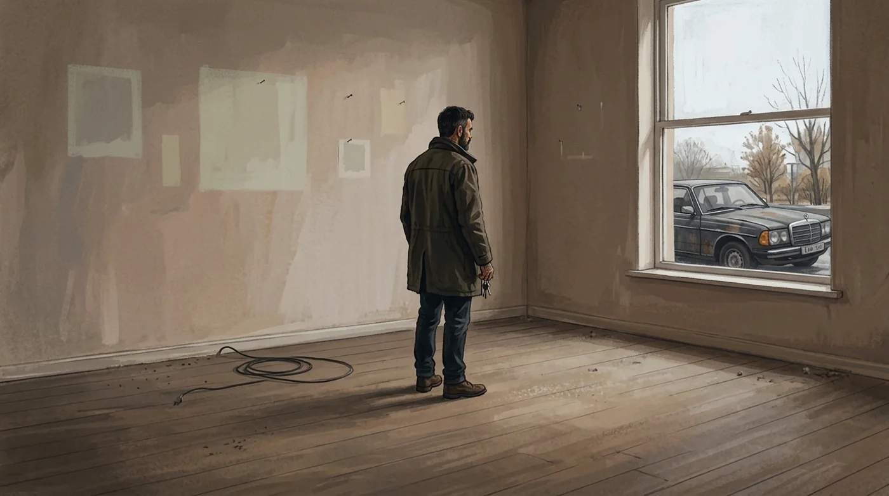
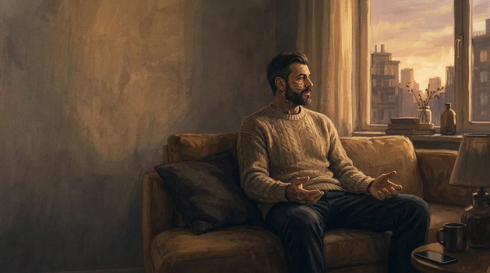

I deleted her number. I never deleted her voice.
Every photo. Every message. Gone in a week. But not those twenty-six seconds. For a year I lay awake at two in the morning and pressed play. Every time, I promised myself that was the last time. It never was.
I already knew what she'd done. I'd heard twenty-two minutes of it, on a call I was never meant to be on. So why did I keep pressing play?
Start at the beginning ↓Read it, or hear me tell it. Same story — about eight minutes either way.
Read it0:00/7:59

When we met, I thought we were going to build an incredible life together. She had big dreams. A beautiful house. A great neighborhood. A convertible. The kind of life people admire from the outside. And honestly — I loved that dream too. I wanted to give it to her.
Part of that came from watching my parents. My father was a cheap ass. He spent most of his money on himself and his friends. My mother somehow took what little she had and turned it into a warm home. She had this incredible ability to make very little feel like enough. Watching her taught me the best lesson. I grew up believing that if a man builds something, the right woman multiplies it.
So I worked. Hard. Then harder. Within eleven months we'd gone from a small apartment to a beautiful house with a garden. She had the convertible she'd always dreamed about. Every promise I'd made, I'd kept. I remember standing there thinking, we made it.
But we hadn't. Because every time I reached the finish line, she moved it. The house wasn't quite right. The neighborhood wasn't exciting enough. There was always another reason why it wasn't enough.
Then one evening, after another argument about what we still didn't have, she looked at me and said —
"I'm a ten." Then she looked at my face. "Girls in my range don't usually go out with guys with scars like you."
Her

I wish I could tell you I walked away. I didn't. I hated hearing it. But some part of me believed her.
And that's the dangerous part. Not when someone says something cruel. When you start helping them convince you it's true.
So I worked even harder. I gave more. I proved more. I wasn't building a future anymore. I was trying to earn my place in it.

Then came the week that changed everything. It was the fall of 2019. I left on a one-week work trip. She told me she was driving to Montreal to spend the week with her family.
A few hours later my phone rang. It was the bank. The woman on the phone said, "Mr. Geller, one of your credit cards was just used at a hotel in Mexico. We believe it might be fraud. Would you like us to cancel the card?"
Mexico? That made no sense. So I cancelled it. Then I tried calling my fiancée. No answer. I sent her two text messages. Call me when you have a minute. Nothing.
About an hour later, my phone rang. I remember smiling. I thought, finally.
It wasn't her calling me. She'd accidentally called me. A butt-dial. I answered — and suddenly I was listening to a conversation I was never supposed to hear.
She wasn't in Montreal. She was sitting in an abortion clinic. With another man.
I remember freezing. The doctor started explaining the procedure. Then I heard her say, "We don't want to keep the baby. We're just not ready yet."
We. That one word shattered me.
For the next twenty-two minutes, I didn't say a word. I just listened. I listened to the woman I loved planning a future that didn't include me. I listened to another man promise her, "Give me a year. I'll be more stable. Then you can leave him for good."
And I listened to the way she talked about me. Not with anger. Not with guilt. With contempt.
I can't even describe what that felt like. It was like every doubt I'd ever had about myself was suddenly being confirmed by the person whose opinion mattered most.
The strange part is, I don't remember crying. I remember looking at my watch. Realizing I was late for a meeting. Straightening my shirt. Walking into a boardroom — and pretending my life hadn't just fallen apart.
A few hours later she realized what had happened. My phone wouldn't stop ringing. When I finally answered, she was crying. I wasn't. I just said, be out of the house before I get back. Then I hung up.
The question that kept running through my head was, "Where did I go wrong?" Today — I know that was the wrong question. But when you've spent years believing you have to earn love, it's the only question that makes sense.

When I came home, I opened the front door — and froze. The house was empty. Every room echoed. The furniture was gone. The curtains were gone. Even the BMW I was still paying for was gone.
Outside, my old Toyota was still sitting there.

So this is what two years looks like.

That day I deleted everything. Her photos. Every message. Everything. Except — that voicemail.
Then lockdown came. No work at the office. No bars. No parties. No distractions. Just me. And twenty-six seconds of someone's voice.
Some nights I'd listen to it five times. Maybe ten. Not because I wanted her back. Because I wanted my story back. The version where she'd loved me. The version where maybe it had just been bad timing. The version where if I'd been a better man, it would have worked.
I started calling it Fifty Shades of Nostalgia. The good memories became brighter every week. The bad ones slowly disappeared. I rebuilt an imaginary relationship that had never actually existed.
Then one night I caught myself thinking, maybe I was too hard on her.
That thought terrified me. Because I'd forgotten something. I'd been lonely while she was still lying next to me. She didn't create my loneliness. She exposed it.

And then — the biggest realization of all. I had deleted her number. But I hadn't deleted her voice. Not the voicemail. The voice she'd left inside my head.
You're not enough. Give more. Work harder. Prove yourself.
She was gone. But every morning, I kept speaking to myself exactly the way she'd spoken to me.
That was the real weight. Not her. The voice.

That's when I stopped asking, "What did she do to me?"
And started asking, "What am I still carrying?"
That question changed my life. Because I realized the greatest loss wasn't losing her. It was losing myself. Healing wasn't about getting over a relationship. It was about rebuilding the relationship I had with myself. Learning to speak to myself differently.

Forgiveness wasn't something I gave her.
It was something I gave myself.
Setting it down is only step one.
You don't get healed back into who you were. You climb — lighter every step — into who you couldn't be before.
Years later, I started hearing the same voice in other people's stories. Different faces. Different pain. Same pattern.
- The woman who still hears her ex every time she looks in the mirror.
- The man who believes success will finally make him worthy.
- The person who keeps giving — hoping that one day someone will finally stay.
That's why I built this quiz. Not to tell you what's wrong with you. But to help you name what you're carrying. Because you can't put down a weight you don't even realize you're holding.
If parts of my story felt familiar, maybe it isn't because our stories are the same. Maybe it's because the voice is. In two minutes you'll see:
- which one you are
- the quiet voice that keeps it running
- the first small step out
And if that's true — I think it's time to find out what you're still carrying.

A sidenote
People keep asking me what's on that voicemail. They're asking the wrong question. What's on the voicemail doesn't matter. What matters — is why I kept pressing play.